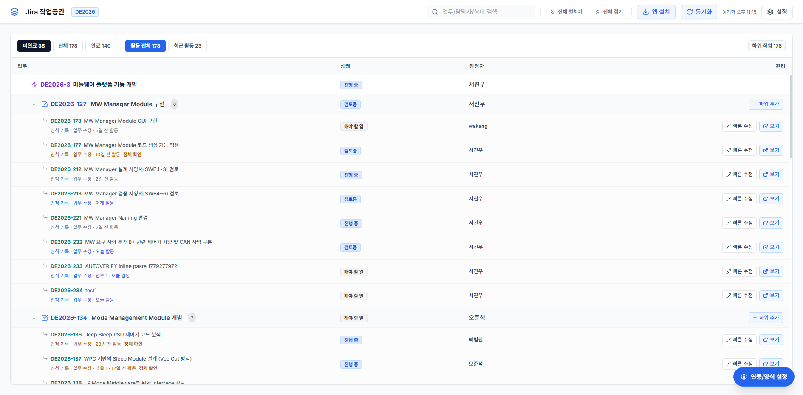
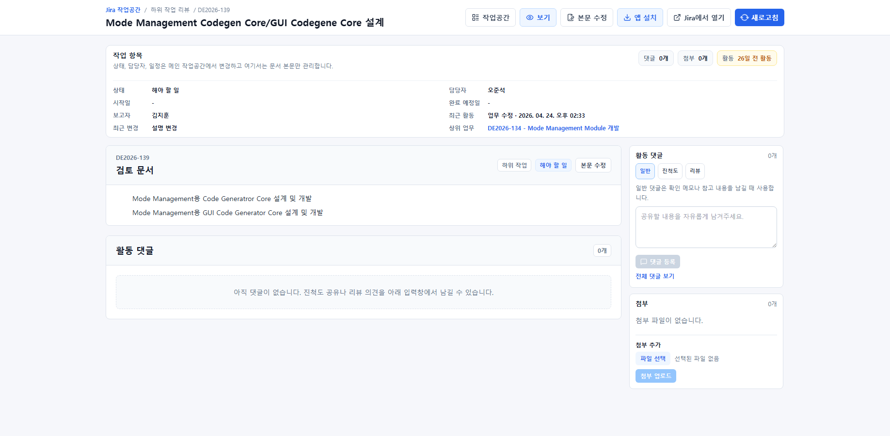

자동차 전장 SW, AUTOSAR, 모터 제어, Python 기반 도구 개발을 하고 있습니다.
막힌 기능 구현에서 멈추지 않고 왜 막혔는지 구조와 검증 흐름을 먼저 찾은 뒤,
실제로 다시 쓰게 되는 화면과 도구로 바꾸는 쪽에 관심이 많습니다.
지금 하는 일
AUTOSAR 기반 코드 생성과 검증 자동화 흐름을 개발하고 있습니다.
주로 만든 것
반복되는 실무와 개인 작업 흐름을 기록, 화면, 자동화 도구로 정리하는 작업을 해왔습니다.
관심 방향
복잡한 흐름도 사람과 팀이 다시 읽고 검증할 수 있는 구조로 바꾸는 데 관심이 있습니다.
02
실무 기록
실무 기록입니다.
회사
모베이스 ASEC
R&D 아키텍처설계팀 / 책임연구원
AUTOSAR 기반 자동 코드 생성 프로그램을 개발하고 있습니다. ARXML 입력 정리부터
코드 생성 결과 검증과 WSL and GCC 기반 테스트 환경까지 이어지는 흐름을 설계하고 구현합니다.
프로젝트
AUTOSAR 기반 자동 코드 생성 프로그램
직접 범위
Python 기반 툴 개발, 입력 정리, 생성 결과 검증, 자동 테스트 환경 구성
핵심 역할
ARXML 해석과 코드 생성, 검증 반복 흐름을 하나의 운영 경로로 정리
정리한 방식
입력과 생성, 검증 경계를 분리하고 실패 지점을 다시 확인하기 쉬운 구조로 바꿨습니다.
회사
LS Automotive
전장 SW 설계팀 / 연구원
Steering Wheel Column Module과 Power Seat Unit 플랫폼 개발을 담당했습니다.
AUTOSAR 기반 구조 설계, 모터 제어 SW 개발, 진단 and 통신 검증, 기능 안전 문서 작업을 진행했습니다.
프로젝트
SCM Platform 1.0 and 2.0, PSU Platform 2.0
직접 범위
기능 구현, 제어 로직 문서화, 진단 and 통신 검증, 결과물 정리
핵심 역할
모터 and 바디 제어 로직 구현과 AUTOSAR 구조 안의 실동작 검증
정리한 방식
기능, 진단, 검증 문서를 분리하지 않고 개발 흐름 안에서 같이 관리했습니다.
회사
동아기계부품
모터 제어 펌웨어 담당 / 사원
전동 밸브 액추에이터와 PT 센서 액추에이터 병행 개발을 맡았습니다.
MCU 변경에 따른 펌웨어 이관과 양산 대응을 함께 경험했습니다.
프로젝트
전동 밸브 액추에이터 1세대 and 2세대, PT 센서 액추에이터
직접 범위
MCU 교체 대응, 펌웨어 이관, 공정 대응, 고객 요구사항 정리
핵심 역할
모터 제어 로직 이해와 하드웨어 변화에 맞춘 동작 검증
정리한 방식
양산과 개발 사이에서 다시 설명해야 하는 흐름을 문서와 코드 기준으로 맞췄습니다.
03
프로젝트 아카이브
개인 프로젝트 모음입니다.
로컬 에이전트 운영 콘솔
사람이 팀을 운영하듯 요청하고, 체크하고, 조정할 수 있게 만든 Codex Team
이 프로젝트는 에이전트를 여러 개 붙여 놓은 데모가 아니라, 누가 요청했고 누가 막혔고
어떤 검토가 필요한지 한눈에 보이게 만든 로컬 운영 콘솔입니다. 결과는 채팅으로
흘러가다 사라지지 않고 issue, discussion, decision, approval, evidence로 남습니다.
Operator → Chief → Specialists → Review and Decision → Evidence 흐름을 화면과 기록에 같이 남깁니다.
최신 조직 설계 화면으로, 누가 총괄하고 누가 구현과 검증을 맡는지 한눈에 보이게 정리한 보드입니다.
왜 만들었는지
AI 작업이 여러 갈래로 흩어지면 지금 무엇이 막혔는지, 누가 확인해야 하는지, 언제 사람이 개입해야 하는지 다시 찾기 어려웠습니다.
어떤 기능인지
실행 재개, 에이전트 보드, issue 승격, discussion and decision 분기, approval 요청, 검증 기록까지 한 화면에서 이어 보게 만든 운영 콘솔입니다.
어떻게 구현했는지
reopen-first 실행 흐름, chief 중심 조직화, specialist 역할 분리, findings 흐름, file-based persistence와 harness 검증 구조를 묶었습니다.
어디까지 맡는지
에이전트가 자동으로 끝내는 구조보다, 사람이 위험과 승인 시점을 잡고 chief가 조정하며 evidence가 남는 팀 운영 구조에 가깝습니다.
뭘 확인했는지
issue 승격, follow-up action 생성, chief 응답 이후 add-agent and decision 연결, 검증 기록 보존이 실제로 끊기지 않는지 확인했습니다.
역할 1
Operator
전체 구현보다 개입 시점과 위험을 봅니다. 언제 승인하고 언제 보류할지, 어떤 검토가 먼저인지 판단하는 자리입니다.
역할 2
Chief
요청을 해석하고 팀을 나눕니다. issue, meeting, staffing, escalation이 생기면 누가 이어받을지와 어떤 후속 조치가 필요한지 결정합니다.
역할 3
Specialists and Review
planner, implementer, tester, reviewer가 좁은 역할로 나뉘어 일하고 결과는 approval과 evidence까지 남겨 재진입 가능한 기록으로 바뀝니다.
설명용 화면 예시
조직 설계 탭에서 chief, tester, reviewer 같은 역할을 어떻게 배치했는지와 부족한 역할이 무엇인지 바로 읽을 수 있습니다.활동 기록 탭에서는 에이전트 추가, 인수인계, escalation, review 흔적이 시간순으로 이어져 사람과 AI가 어떻게 소통했는지 보입니다.
웹 기반 MCU 가상화 학습 환경
실제 보드 없이도 MCU 코드와 하드웨어 반응을 함께 볼 수 있게 만든 Virtual MCU Lab
브라우저에서 C 코드를 실행해 보고, 그 결과가 GPIO, register, graph, log에 동시에
반영되는 흐름을 보여주기 위한 학습용 프로젝트입니다.
코드를 실행하면 하드웨어 반응이 어디에서 어떻게 보이는지 설명 없이도 따라갈 수 있게 만드는 것이 목표였습니다.
코드 실행 결과가 register와 graph, schematic 상태로 같이 바뀌는 흐름을 한 화면에서 보여줍니다.
왜 만들었는지
실제 보드가 없으면 MCU 코드가 어떤 반응을 만드는지 설명만으로 이해시키기 어려웠습니다.
어떤 기능인지
코드를 실행하면 가상 MCU가 동작하고, 결과가 핀 상태, register, graph, log로 동시에 반영됩니다.
어떻게 구현했는지
코드 에디터, 실행기, schematic 뷰어, register and graph inspector, log 화면을 하나의 학습 루프로 묶었습니다.
어디까지 맡는지
실제 보드를 완전히 대체하는 장비가 아니라, 학습과 설명에 필요한 핵심 반응을 확인하게 만드는 환경입니다.
뭘 확인했는지
코드 실행 결과가 핀 상태, register, graph, log에서 같은 방향으로 반영되는지 확인했습니다.
기능 1
코드 작성 and 실행
브라우저 안에서 코드를 바로 바꾸고 실행해 결과를 확인할 수 있습니다. 코드를 바꿨을 때 하드웨어 반응이 어떻게 달라지는지가 바로 이어집니다.
기능 2
회로 and 상태 시각화
schematic, pin 상태, register 값, graph를 따로 보지 않고 한 자리에서 연결해 보이게 했습니다.
기능 3
설명용 학습 루프
실행 결과를 log로만 끝내지 않고, 왜 이런 반응이 나왔는지 화면 요소별로 다시 읽을 수 있게 만들었습니다.
설명용 화면 예시
메인 화면에서는 어떤 실습을 시작할지 고르고, 바로 코드 실행 화면으로 넘어가게 구성했습니다.코드 편집기와 실행 결과가 붙어 있어, 수정한 코드가 어떤 반응을 만들었는지 바로 확인할 수 있습니다.register, pin, graph 화면은 실행 중 바뀌는 값을 추적하면서 하드웨어 반응 원리를 설명하는 데 쓰입니다.
Jira 하위 작업 리뷰 and 진행 관리
Jira를 대체하지 않고, 하위 작업 리뷰와 진행 확인만 빠르게 묶은 Jira Mini
Jira에서 자주 다시 보게 되는 하위 작업 목록, 리뷰 메모, 댓글, 본문 수정 흐름만
따로 뽑아 빠르게 확인하기 위해 만든 보조 도구입니다.
기능을 늘리기보다, 리뷰할 때 실제로 다시 보게 되는 화면만 좁혀서 더 빠르게 읽게 하는 데 집중했습니다.

하위 작업 상태와 최근 변경, 리뷰 지점을 한 자리에서 다시 보기 쉽게 정리한 화면입니다.
왜 만들었는지
일반 Jira 화면은 정보가 많아 하위 작업 상태와 리뷰 흐름을 빠르게 읽기 불편했습니다.
어떤 기능인지
이슈 목록에서 하위 작업을 고르고 상세 화면에서 본문, 댓글, 첨부, 진행 상태를 바로 확인하고 수정합니다.
어떻게 구현했는지
작업 목록, 하위 작업 리스트, 상세 보기, 댓글 구분, 첨부 관리, 진행 메모 정리 기능을 묶었습니다.
어디까지 맡는지
Jira를 완전히 대체하는 제품이 아니라, 다시 확인해야 하는 리뷰 and 진행 흐름만 빠르게 보는 보조 화면입니다.
뭘 확인했는지
이슈 선택, 상세 로딩, 본문 수정, 첨부 확인, 댓글 분기, Jira 연동 흐름이 실제로 이어지는지 확인했습니다.
기능 1
하위 작업 빠른 탐색
다시 봐야 하는 하위 작업과 최근 변경 지점을 한 화면에 모아, 이슈를 고르기 전 탐색 시간을 줄였습니다.
기능 2
리뷰 and 본문 확인
본문, 댓글, 첨부, 리뷰 메모를 따로 오가지 않고 같은 맥락에서 읽고 수정할 수 있게 만들었습니다.
기능 3
진행 상태 다시 읽기
이 도구의 목적은 Jira 전체를 대체하는 것이 아니라, 현재 어떤 하위 작업이 어디까지 갔는지 다시 읽게 하는 것입니다.
설명용 화면 예시
작업 목록 화면에서는 어떤 하위 작업이 열려 있고 무엇이 최근에 바뀌었는지 먼저 보여줍니다.

상세 화면에서는 본문, 댓글, 첨부, 리뷰 메모가 이어져 있어 수정과 검토를 같은 흐름에서 진행할 수 있습니다.
한국 주식 스캔 and 리서치 도구
추천, 리서치, 설명, 실행 가드레일을 분리해서 만든 주식 분석기
단순 종목 조회기가 아니라 가격 패턴과 RS로 후보를 좁히고, 뉴스 and 공시 이벤트를
설명 가능한 형태로 묶고, 실거래 readiness는 별도 gate로 분리해 둔 분석 and 운영 보조 플랫폼입니다.
좋은 후보를 찾는 일과 실제 주문을 허용하는 일을 섞지 않도록 구조를 나눴습니다.
최신 AI Research Lab 화면으로, 왜 이 종목을 보고 있는지와 어떤 근거가 쌓였는지를 설명 가능한 형태로 모아둔 작업대입니다.
왜 만들었는지
후보 탐색, 이벤트 해석, 장기 리서치, 실주문 준비 상태가 한 덩어리처럼 섞여 있으면 무엇이 참고 정보이고 무엇이 실행 조건인지 흐려졌습니다.
어떤 기능인지
종목 스캔, 추천 순위화, 이벤트 요약, 장기 리서치 보드, AI 설명 레이어, 실행 readiness 확인을 각각 분리한 주식 분석기입니다.
어떻게 구현했는지
Kiwoom OpenAPI, FastAPI, React UI를 묶고 scan snapshot and event cache를 저장한 뒤, long-term research와 AI Lab이 같은 바닥 데이터를 다르게 읽게 했습니다.
어디까지 맡는지
추천과 설명 기능은 강하게 만들되, 실제 주문은 execution gate가 readiness and risk를 다시 확인할 때만 이어지도록 분리했습니다.
뭘 확인했는지
추천 점수와 실주문 권한이 섞이지 않는지, watch-only 레이어가 order submit으로 바로 이어지지 않는지, summary and event data가 최신 상태로 반영되는지 확인했습니다.
기능 1
스캔 and 추천
가격 패턴, RS, quality를 기준으로 후보를 추리고 우선순위를 매깁니다. 결과는 스냅샷 API로 노출해 웹에서 빠르게 탐색하게 했습니다.
기능 2
장기 리서치 and AI Lab
뉴스 and 공시 이벤트를 evidence와 issue queue로 정리하고, 사람이 읽기 쉬운 설명 레이어를 별도로 둬 장기 판단에 쓰게 했습니다.
기능 3
실행 가드레일
pending order, live sync, readiness를 다시 확인하는 실행 게이트를 따로 두어 분석 화면이 바로 주문 화면이 되지 않게 했습니다.
설명용 화면 예시
AI Research Lab에서는 뉴스, 공시, 벤치마크 프롬프트, 저장된 원문 경로까지 묶어서 장기 리서치 근거를 남깁니다.종목 상세에서는 차트, 이벤트 리스크, AI 인텔 요약을 함께 보여줘서 종목 하나를 읽는 시간을 줄입니다.자동매매 운영 화면은 로그인 상태, 스캔 갱신 여부, 주문 전송 잠금 같은 실행 조건을 따로 보여줘 분석과 주문을 분리합니다.
생활형 자동화 에이전트 묶음
일상생활에서 필요한 다양한 작업들을 목적별 도구로 나눠 자동화했습니다
중고나라 검색기, Discord agent, Git researcher, 논문 에이전트를 하나로 묶었습니다.
공통점은 검색만 대신하는 게 아니라, 검색 뒤의 선별, 중복 제거, 근거 정리, 전달까지
실제로 다시 하게 되는 루프를 줄여주는 데 있습니다.
왜 만들었는지
중고거래 후보 비교, 로컬 작업 원격 조종, GitHub 프로젝트 탐색, 논문 리서치처럼 자주 반복되지만 매번 다시 정리해야 하는 일이 계속 생겼습니다.
어떤 기능인지
도메인별 입력을 받아 후보를 모으고, 중복을 줄이고, 사람이 바로 판단할 수 있는 요약과 근거 형태로 다시 정리해 주는 자동화 도구 묶음입니다.
어떻게 구현했는지
Discord transport, GitHub Search and README API, paper-distill-mcp, openkb, validator scripts, 중고 매물 수집 and 비교 로직처럼 목적에 맞는 전용 도구를 따로 붙였습니다.
어디까지 맡는지
자동으로 결정을 대신하는 도구가 아니라, 사람이 더 빨리 비교하고 설명하고 다음 후보를 정리하도록 돕는 보조 도구들입니다.
뭘 확인했는지
검색 결과 수집, 중복 제거, 요약 전달, 모드 분기, validator 통과처럼 각 도메인의 실제 작업 루프가 끊기지 않는지 확인했습니다.
이 탭 안에는 아래 네 가지 자동화 기능이 같이 들어 있습니다.
01
중고나라 검색기
여러 사이트의 중고 매물을 모아 가격대와 설명 부족 여부를 같이 보고, 다시 볼 후보만 남기기 위해 만들었습니다.
원리
키워드별 매물을 수집하고 중복을 지우고 가격과 메모를 같이 보게 정리합니다.
동작
검색 조건 해석 → 매물 수집 → 중복 제거 → 가격 비교 → 후보 정리 흐름으로 돌아갑니다.
02
Discord Agent
로컬 Codex 작업을 휴대폰과 Discord에서도 이어서 보고 승인하려고 만든 공용 조종면입니다.
원리
Discord는 입력 and 승인 화면을 맡고, 실제 실행은 로컬 Codex 세션과 프로젝트 폴더가 맡습니다.
동작
Generic, Guided, Native control plane 모드가 있고, 특화 모드에서는 github-ai-review 같은 전용 런타임도 태웁니다.
03
Git Researcher
매일 쏟아지는 AI agent 저장소 중에서 오늘 다시 볼 만한 프로젝트만 빠르게 고르기 위해 만든 탐색 런타임입니다.